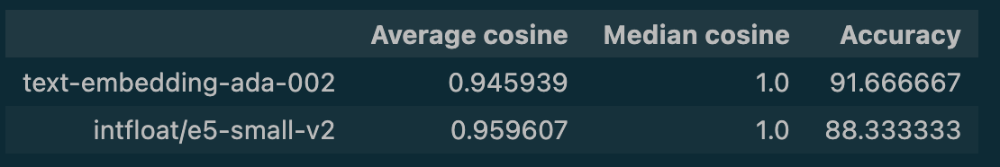

3.1. Embeddings Experiment#
According to multiple estimates, 80% of data generated by businesses today is unstructured data such as text, images, or audio. This data has enormous potential for machine learning applications, but there is some work to be done before it can be used directly. Embeddings are the backbone of our system. Our goal is to understand how different embeddings have an impact on the returned results for a given query.
Which Embeddings Model to use?! Glad you asked! There are several options available:
OpenAI models, such as: text-embedding-ada-002, text-embedding-3-small, text-embedding-3-large
Open source models, which you can find at HuggingFace. The MTEB Leaderboard ranks the performance of embeddings models on a few axis, though not all models can be run locally.
Experiment Overview#
Topic |
Description |
|---|---|
📝 Hypothesis |
Exploratory hypothesis: “Can introducing a new word embedding method improve the system’s performance?” |
⚖️ Comparison |
We will compare text-embedding-ada-002 (from OpenAI) and infloat/e5-small-v2 (open-source) |
🎯 Evaluation Metrics |
We will look at Accuracy and Cosine Similarity to compare the performance. |
📊 Data |
The data that we will use consists of code-with-engineering and code-with-mlops sections from Solution Ops repository which were previously pre-chunked in chunks of 180 tokens with 30% overlap fixed-size-chunks-engineering-mlops-180-30.json. |
📊 Evaluation Dataset |
300 question-answer pairs generated from code-with-engineering and code-with-mlops sections from Solution Ops repository. See Generation QA Notebook for insights on how they were generated. |
Setup#
Import necessary libraries
%run -i ./pre-requisites.ipynb
print(f"Evaluation dataset: {path_to_evaluation_dataset}")
print(f"Pre-chunked documents: {pregenerated_fixed_size_chunks}")
Evaluation dataset: ./output/qa/evaluation/qa_pairs_solutionops.json
Pre-chunked documents: ./output/pre-generated/chunking/fixed-size-chunks-engineering-mlops-180-30.json
1. Use text-embedding-ada-002 from OpenAI#
This model has a maximum token limit of 8191. Usage is priced per input token, it is available either as Pay-As-You-Go or as Provisioned Throughput Units (PTUs) model. More price related info can be found here.
Let’s create a function which is responsible to embed an input query using `text-embedding-ada-002. We will use the REST API, here you can see the documentation.
import requests
def oai_query_embedding(
query,
endpoint=azure_aoai_endpoint,
api_key=azure_openai_key,
api_version="2023-07-01-preview",
embedding_model_deployment=azure_openai_embedding_deployment
):
"""
Query the OpenAI Embedding model to get the embeddings for the given query.
Args:
query (str): The query for which to get the embeddings.
endpoint (str): The endpoint for the OpenAI service.
api_key (str): The API key for the OpenAI service.
api_version (str): The API version for the OpenAI service.
embedding_model_deployment (str): The deployment for the OpenAI embedding model.
Returns:
list: The embeddings for the given query.
"""
request_url = f"{endpoint}/openai/deployments/{embedding_model_deployment}/embeddings?api-version={api_version}"
headers = {"Content-Type": "application/json", "api-key": api_key}
request_payload = {"input": query}
embedding_response = requests.post(
request_url, json=request_payload, headers=headers, timeout=None
)
if embedding_response.status_code == 200:
data_values = embedding_response.json()["data"]
embeddings_vectors = [data_value["embedding"] for data_value in data_values]
return embeddings_vectors[0]
else:
raise Exception(f"failed to get embedding: {embedding_response.json()}")
👩💻 Try it out. Feel free to pass another query:
query = "Hello"
query_vectors = oai_query_embedding(query)
print(f"The query is: {query}")
print(f"The embedded vector is: {query_vectors}")
print(f"The length of the embedding is: {len(query_vectors)}")
---------------------------------------------------------------------------
Exception Traceback (most recent call last)
Cell In[3], line 3
1 query = "Hello"
----> 3 query_vectors = oai_query_embedding(query)
5 print(f"The query is: {query}")
6 print(f"The embedded vector is: {query_vectors}")
Cell In[2], line 38, in oai_query_embedding(query, endpoint, api_key, api_version, embedding_model_deployment)
36 return embeddings_vectors[0]
37 else:
---> 38 raise Exception(f"failed to get embedding: {embedding_response.json()}")
Exception: failed to get embedding: {'error': {'code': '401', 'message': 'Access denied due to invalid subscription key or wrong API endpoint. Make sure to provide a valid key for an active subscription and use a correct regional API endpoint for your resource.'}}
2. Use intfloat/e5-small-v2 from Hugging Face#
This model is open source and has a size 0.13 GB. The model is limited to working with English texts and can handle texts with a maximum of 512 tokens. Being open sourced, it means there is no price associated with it, you can download it locally, you can fine-tune it etc. The embedding size is 384.
👩💻 Embed an input query using e5-small-v2 model
Look at the </> Use in sentence-transformers section from Hugging Face.
🔍 Solution. Expand this only if you got stuck:
from sentence_transformers import SentenceTransformer
input = "Hello"
model = SentenceTransformer("intfloat/e5-small-v2")
embedded_input = model.encode(query, normalize_embeddings=True)
print(f"The query is: {input}")
print(f"The embedded vector is: {embedded_input}")
print(f"The length of the embedding is: {len(embedded_input)}")
Analysis#
So far we have been looking at two different embedding models and we’ve listed some of their characteristics. Let’s try now to evaluate how well each model performs in our context. For this, we should first create embeddings from our data.
Note
In the interest of time, we have pre-generated the embeddings for you:
The pre-generated embeddings using
intfloat/e5-small-v2can be found at fixed-size-chunks-180-30-engineering-mlops-e5-small-v2.jsonThe pre-generated embeddings using
text-embedding-ada-002can be found at fixed-size-chunks-180-30-engineering-mlops-ada.json
Let’s load the path to each file. Note the name of variables:
%run -i ./pre-requisites.ipynb
print(f"Pre-generated embeddings using intfloat/e5-small-vs: {pregenerated_fixed_size_chunks_embeddings_os}")
print(f"Pre-generated embeddings using text-embedding-ada-002: {pregenerated_fixed_size_chunks_embeddings_ada}")
Pre-generated embeddings using intfloat/e5-small-vs: ./output/pre-generated/embeddings/fixed-size-chunks-180-30-engineering-mlops-e5-small-v2.json
Pre-generated embeddings using text-embedding-ada-002: ./output/pre-generated/embeddings/fixed-size-chunks-180-30-engineering-mlops-ada.json
📈 Evaluation#
In this workshop, to separate our experiments, we will take the Full Reindex strategy and we will create a new index per embedding model. Therefore, for each embedding model we will:
Create a new index. Note: make sure to give a relevant name.
Populate the index with the embeddings that you have generated at the previous steps.
Note
You can reuse available functions from ./helpers/search.ipynb, such as: create_index and upload_data.
👩💻 Create two indexes#
By running the next cell, all the functions from search.ipynb will become available:
%%capture --no-display
%run -i ./helpers/search.ipynb
Sample code for creating a new index and uploading the data which was previously embedded using AOI model:
# 1. Create a new index
# TODO: Replace the prefix with a relevant name given your embedding model
new_index_name = "fixed-size-chunks-180-30-engineering-mlops-ada"
vector_size = 1536 # TODO: Replace with the vector size of your embedding model
create_index(new_index_name)
# Uncomment the following when running the cell:
# # 2. Upload the embeddings to the new index
# # TODO: Replace the embeddings_file_path to point to the right file path
# embeddings_file_path = pregenerated_fixed_size_chunks_embeddings_ada
# upload_data(file_path=embeddings_file_path,
# search_index_name=new_index_name)
👩💻 Create a new index and upload the embeddings created with intfloat/e5-small-v2 model.#
🔍 Solution. Expand this only if you got stuck:
from sentence_transformers import SentenceTransformer
# 1. Create a new index
new_index_name = "fixed-size-chunks-180-30-engineering-mlops-e5-small-v2"
vector_size = 384 # TODO: Replace with the vector size of your embedding model
create_index(new_index_name, vector_size)
# 2. Upload the embeddings to the new index
embeddings_file_path = pregenerated_fixed_size_chunks_emebddings_os
upload_data(file_path=embeddings_file_path, search_index_name=new_index_name)
📊 Evaluation Dataset#
Note: The evaluation dataset can be found at qa_pairs_solutionops.json. The format is:
"user_prompt": "", # The question
"output_prompt": "", # The answer
"context": "", # The relevant piece of information from a document
"chunk_id": "", # The ID of the chunk
"source": "" # The path to the document, i.e. "..\\data\\docs\\code-with-dataops\\index.md"
🎯 Evaluation metrics#
Let us try to evaluate our baseline model. We will have two metrics:
Cosine similarity:
Using cosine similarity we will calculate how similar in meaning is the first text that was retrieved from the search index compare to the text that was used to formulate the question (and hence, to answer to it). Note: our search index returns the top 3 nearest neighbors, but we will look at the first retrieved one. We will then calculate the mean and median cosine across our evaluation dataset.
Accuracy:
By accuracy we mean how many times the search returned the document (the file path to the document) which we expected in our evaluation dataset. We will return the percentage of successfully retrieved documents across our evaluation dataset.
import numpy as np
from numpy.linalg import norm
def calculate_cosine_similarity(expected_document_vector, retrieved_document_vector):
cosine_sim = np.dot(expected_document_vector, retrieved_document_vector) / \
(norm(expected_document_vector)*norm(retrieved_document_vector))
return float(cosine_sim)
import os
import ntpath
import numpy as np
from numpy.linalg import norm
def calculate_metrics(evaluation_data_path, embedding_function, search_index_name):
""" Evaluate the retrieval performance of the search index using the evaluation data set.
Args:
evaluation_data_path (str): The path to the evaluation data set.
embedding_function (function): The function to use for embedding the question.
search_index_name (str): The name of the search index to use for retrieval.
Returns:
list: The cosine similarities between the expected documents and the top retrieved documents.
"""
if not os.path.exists(evaluation_data_path):
print(
f"The path to the evaluation data set {evaluation_data_path} does not exist. Please check the path and try again.")
return
nr_correctly_retrieved_documents = 0
nr_qa = 0
cosine_similarities = []
with open(evaluation_data_path, "r", encoding="utf-8") as file:
evaluation_data = json.load(file)
for data in evaluation_data:
user_prompt = data["user_prompt"]
expected_document = data["source"]
expected_document_vector = embedding_function(data["context"])
# 1. Search in the index
search_response = search_documents(
search_index_name=search_index_name,
input=user_prompt,
embedding_function=embedding_function,
)
retrieved_documents = [ntpath.normpath(response["source"])
for response in search_response]
top_retrieved_document = search_response[0]["chunkContentVector"]
# 2. Calculate cosine similarity between the expected document and the top retrieved document
cosine_similarity = calculate_cosine_similarity(
expected_document_vector, top_retrieved_document)
cosine_similarities.append(cosine_similarity)
# 3. If the expected document is part of the retrieved documents,
# we will consider it correctly retrieved
if ntpath.normpath(expected_document) in retrieved_documents:
nr_correctly_retrieved_documents += 1
nr_qa += 1
accuracy = (nr_correctly_retrieved_documents / nr_qa)*100
print(f"Accuracy: {accuracy}% of the documents were correctly retrieved from Index {index_name}.")
return cosine_similarities
%run -i ./pre-requisites.ipynb
👩💻 1. Evaluate the system using text-embedding-ada-002 model#
🔍 Sample code. Feel free to expand it. It may take up to 4 minutes to run:
# TODO: Replace the prefix with a relevant name given your embedding model
from statistics import mean, median
index_name = "fixed-size-chunks-180-30-engineering-mlops-ada"
cosine_similarities = calculate_metrics(
evaluation_data_path=path_to_evaulation_dataset,
embedding_function=oai_query_embedding,
search_index_name=index_name,
)
avg_score = mean(cosine_similarities)
print(f"Avg cosine similarity score:{avg_score}")
median_score = median(cosine_similarities)
print(f"Median cosine similarity score: {median_score}")
👩💻2. Evaluate the system using infloat/e5-small-v2 model#
Using the calculate_metrics function, calculate the metrics using the infloat/e5-small-v2 open source model.
🔍 Sample code. It may take up to 4 minutes to run:
# TODO: Replace the prefix with a relevant name given your embedding model
index_name = "fixed-size-chunks-180-30-engineering-mlops-e5-small-v2"
cosine_similarities = calculate_metrics(
evaluation_data_path=path_to_evaluation_dataset,
embedding_function=embed_chunk,
search_index_name=index_name,
)
avg_score = mean(cosine_similarities)
print(f"Avg score:{avg_score}")
median_score = median(cosine_similarities)
print(f"Median score: {median_score}")
💡 Conclusions#
What conclusions can you reach? Are you surprised by the results? In what cases would you find useful to use the open source model? Discuss these questions and any other ideas you may have with your colleagues.
Possible conclusions. Expand this only after you reached your own conclusions:

Open source models can be useful when you need more control over the model, such as running it offline, fine-tuning it, or customizing it for your specific needs. As it was proven in our experiment, the trade-off is excellent. However, open source models may require more engineering effort, have lower performance on some tasks, and have less safety and content filtering features than closed source models.